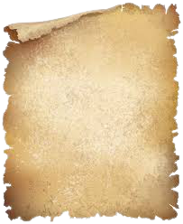

Головна
Головна
II_Граматика
 V_Текст


Пропонований посібник - систематизований збірник завдань до курсу "Сучасна українська літературна мова". Мета посібника - сприяти кращому засвоєнню теоретичних знань, поглибленому вивченню сучасної української літературної мови, виробленню і вдосконаленню практичних навичок мовного аналізу. Лабораторні роботи передбачають 12 варіантів. Кожен варіан представлений 5 завданнями. Матеріал для вирішення того чи іншого завдання є індивідуальним, його дібрано з текстів художньої літератури та публіцистики.


Підручник складено за програмою «Сучасна українська літературна мова» для мовно-літературних факультетів педагогічних інститутів УРСР. Розділи «Вступ», «Лексика і фразеологія», «Фонетика», «Графіка і орфографія», вступну частину до розділу «Граматика» (§§ 64—69), теми «Дієслово» і «Модальні слова» з розділу «Морфологія» написав М. А. Жовтобрюх. Теми «Іменник», «Прикметник», «Числівник», «Займенник», «Прислівник», «Категорія стану», «Прийменник», «Сполучник», «Частки», «Зв'язка» і «Вигуки» з розділу «Морфологія» написав Б. М. Кулик. Оцифровано

У підручнику висвітлено найважливіші питання лексикології, фразеології, фонетики сучасної української мови. Зокрема подано системно- семасіологічну характеристику словникового складу української мови, опис основних системних зв’язків у лексиці, розглянуто природу і струк туру лексичного значення слова, проблему типології лексичних значень, смислову структуру слова, види семантичної деривації, актуальні питан ня української фразеології, а також сучасної української лексикографії. Опис одиниць фонетики здійснено в артикуляційному, акустичному і власне лінгвістичному (функціональному) вимірах. При цьому автори спиралися на здобутки фонетичної теорії, власний досвід викладання, а також на дослідження звукової системи української літературної мови, здійснені в лабораторіях експериментальної фонетики Інституту філо логії Київського національного університету імені Тараса Шевченка та Інституту мовознавства імені О.О. Потебні НАН України.
![Обкладенка підручника]()

У підручнику розглянуто основні питання курсу з урахуванням сучасного стану мовознавчої науки: загальні відомості про мову та мовознавство як науку, природу і сутність мови, її походження, за- кономірності розвитку й функціонування на різних історичних етапах, походження й розвиток письма, генеалогічну й типологічну класифікації мов, структурні рівні та одиниці мови тощо. Подано необхідну довідкову інформацію: перелік основної та допоміжної літератури, предметний покажчик, а також запитання і завдання для самоперевірки.